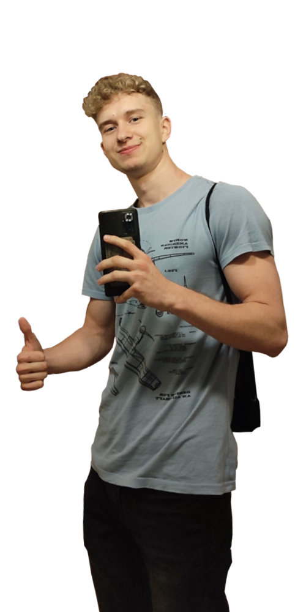
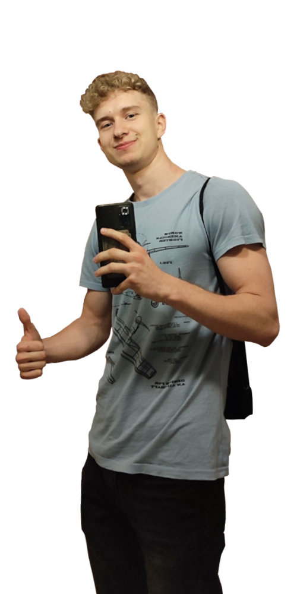

Talking Dino - Interactive pet (Android)
Interaktywna gra dla dzieci pozwalająca na zabawę oraz rozmowę ze swoim wirtualnym pupilem.
WIĘCEJSzukam praktyk lub stażu w banży gier na stanowisku - programista. (Szczecin/Zdalnie)
Zapraszam do sprawdzenia mojego portfolio, jak i CV :)
 

Wszystkie produkcje zostały wykonane na silniku Unity

Interaktywna gra dla dzieci pozwalająca na zabawę oraz rozmowę ze swoim wirtualnym pupilem.
WIĘCEJProsta gra typu hyper-casual, gdzie gracz ma za zadanie uniknąć wszystkich przeszkód i wykręcić jak najlepszy wynik, a
pomagają mu w tym liczne ulepszenia.
Tytuł stworzony wraz z kolegami ze studiów na konkurs ZGTK w łodzi. Gra horror z elementami zagadek i łamigłowek.
Gracz zostaje uwięziony w budynku z którego musi się wydostać, na jego drodze musi stawić czoła nie lada wyzwaniom.
Strzelanka połączona z elementami skradanki, kilka poziomów podkoloryzowanych małą fabułą.
WIĘCEJSymulator kanału na YouTube, pierwsza stworzona gra. :D
WIĘCEJMerge game, gracz łączy i ulepsza swoje dotychczasowe samochody.
WIĘCEJ
Kilku dniowy projekt, zabawa animacjami z postaci kodu.
WIĘCEJ
Jest tutaj zawarty mój kod ze studiów, od samego początku stawiania pierwszych kroków w programowaniu, aż do dziś.
WIĘCEJKilka słów na mój temat
Mam 22 lata oraz studiuję informatykę ze specjalizacją inżynieria orpogramowania na Zachodniopomorskim Uniwersytecie Technologicznym w Szczecinie. Od małego byłem zafascynowany grami, teraz natomiast przerodziło się to w coś więcej - pasję do tworzenia, aczkolwiek aktualnie jeszcze hobbystycznie. Naukę programowania oraz pierwsze projekty rozpocząłem w liceum i trwa to po dzień dzisiejszy. Większość gier napisanych zostało na urządzenia android, lecz nie zabrakło także tych na PC.
Języki:
Angielski - B2,
Niemiecki - A2
Języki programowania:
C#, C++, python, js(podstawy), java(podstawy), html(podstawy)
Narzędzia:
Unity, Visual Studio, GitHub, Trello, phpMyAdmin
Specjalności
Interface,
Gameplay Scripting,
Animation Scripting
C++
[CPA-21-02] CPA – C++ Certified Associate Programmer
Wydany w maju 2021
C#
98-361:MTA: Software Development Fundamentals
Wydany w grudniu 2020